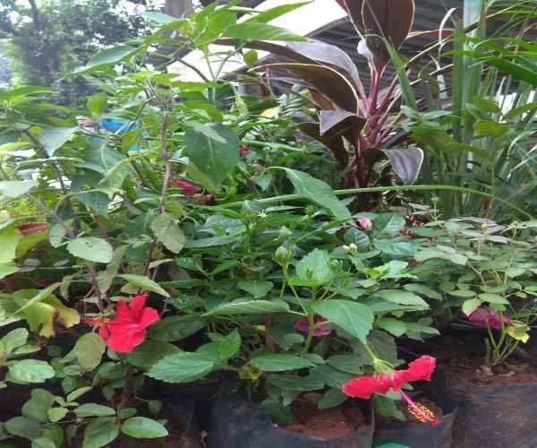

This demo Page will be displayed correctly both on a Mobile Phone and a Computer Screen.
National Pension scheme (NPS) is a pension scheme launched by the Government of India to provide old-age security to its citizens. It is a long-term saving avenue to plan your retirement through safe & regulated market linked returns. It was initially made available only to public sector employees in 2004.Since 2009, it has been made available to all citizens of India.
All citizens (including Non-resident Indians) from the ages of 18 to 65 years can join NPS. However, if the citizenship of an Individual changes, he required to close the account. It is to be noted that OCI (Overseas Citizens of India) and PIO (Person of Indian Origin) card holders and Hindu Undivided Families are not eligible for opening of NPS account.
A NPS account can only be opened in an individual capacity & not jointly with spouse or children.
There are two types of account offered under this scheme I.e. Tier I & Tier II. Tier-I is a mandatory account while Tier-II is voluntary in nature. The major difference between the two is on withdrawal of money invested. One cannot withdraw the entire money from Tier-I account till your retirement. Even on retirement, there are restrictions on withdrawal on the Tier-I account. The Account holder is free to withdraw the entire money from the Tier-II account.
One can open a NPS account with entities known as Point of Presence (POP). Most banks, are enrolled as POPs. Certain financial institutions also act as POPs. The authorized branches of a POP, called point of presence service providers (POP-SPs), act as the collection centers. A list of POP-SP's can be found at the Pension Fund Regulatory & Development Authority (PFRDA) website. (https://www.npscra.nsdl.co.in/pop-sp.php)
An amount of Rs 6000 per annum is to be contributed to a Tier I account.
Investment choices Available:1) Active Choice: This option allows the investor to decide how the money should be invested in different assets.
2) Auto choice or lifecycle fund: This is the default option which invests money automatically in line with the age of the account holder. This choice can be switch once during a financial year for both Tier I & Tier II accounts.
An employee’s own contribution is eligible for a tax deduction --up to 10 per cent of the salary (basic plus DA) – under Section 80CCD (1) of the Income Tax Act within the overall ceiling of Rs 1.5 lakh allowed under Section 80C and Section 80CCE. The employer’s contribution to NPS is exempted under Section 80CCD (2). Moreover, individuals can claim an additional deduction of up to Rs 50,000 under Section 80CCD (1B), which is in addition to Rs 1.5 lakh permitted under Section 80C. A self-employed person can also contribute 20 per cent of his gross income under Section 80CCD (1) in NPS.
Not applicable
To open an NPS account offline or manually, you will have to find a Point of Presence (Pop), (it could be a bank too) first. Collect a subscriber form from your nearest PoP and submit it along with the KYC papers. Ignore if you are already KYC-compliant with the bank. Once you make the initial investment (not less than Rs.500 or Rs.250 monthly or Rs. 1,000 annually), the PoP will send you a PRAN – Permanent Retirement Account Number. This number and the password in your sealed welcome kit will help you operate your account. There is a one-time registration fee of Rs.125 for this process.
It is now possible to open an NPS account in less than half an hour. Opening an account online (enps.nsdl.com) is easy, if you link your account to your PAN, Aadhaar and mobile number. You can validate the registration using the OTP sent to your mobile. This will generate a PRAN (Permanent Retirement Account Number), which you can use for NPS login.
